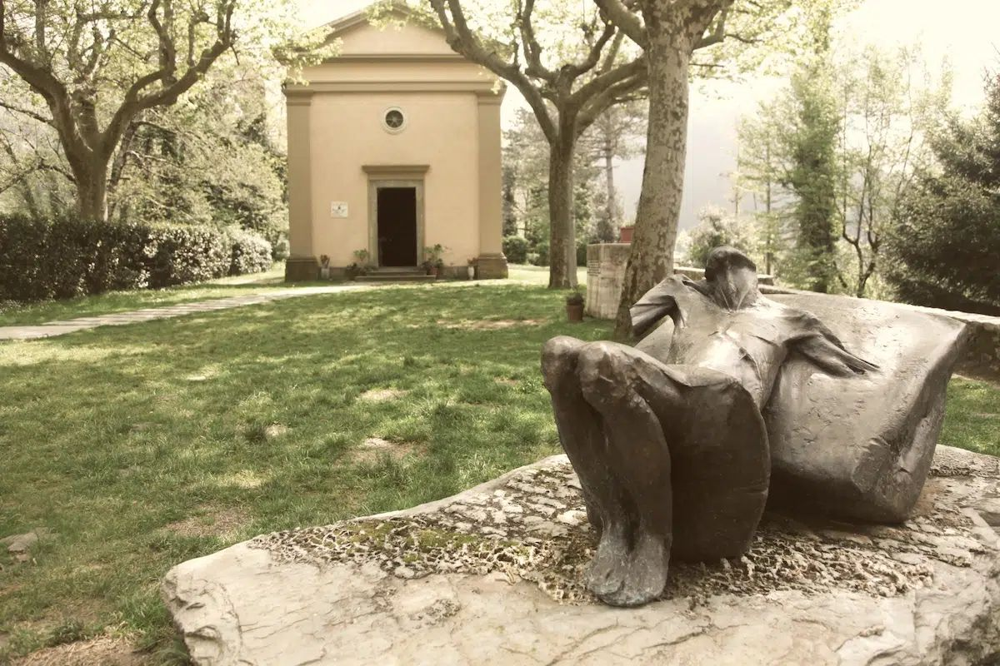

AK-Distomo
zurück
Start
|
Veranstaltung am 7. September 2021, 19:00 Uhr,
im Centro Sociale (Sternstrasse 2, 20357 HH),
es gilt die 3G-Regel und eine Begrenzung der Teilnehmer*innen auf 30,
und als
Online-Veranstaltung unter https://www.sternschanze1942.de/stanna0709
Das Massaker von Sant′Anna di Stazzema - Ein deutsches Kriegsverbrechen
|
560 Tote, Säuglinge, Kinder, Frauen und Alte. Die angebliche ”Partisanenbekämpfungsaktion” in
den Morgenstunden des 12. August 1944 in dem toskanischen Dorf Sant′Anna di Stazzema war in Wirklichkeit
ein mörderischer Akt gegen unbeteiligte Zivilbevölkerung. Ahnungs- und wehrlos waren sie, als die
Einheiten der 16. SS-Panzergrenadierdivision ”Reichsführer SS” kamen, um das Dorf und die Bewohner
zu vernichten. Die SS wütete furchtbar und gnadenlos.
Eine amerikanische Militärkommission der nachrückenden Alliierten erhob kurze Zeit nach dem Massaker
Beweise, oft präzise Berichte über diesen Augustmorgen. Doch die Akten mit dem Ermittlungsmaterial
verschwanden im Keller des Palazzo Cesi, der italienischen Militärstaatsanwaltschaft in Rom, in dem sogenannten
”Schrank der Schande”. Es waren 695 Akten mit Unterlagen über die deutschen Verbrechen in Italien,
die erst im Jahr 1994 im Rahmen des Strafverfahrens gegen den deutschen Kriegsverbrecher Priebke ”wiederentdeckt” wurden.
Verantwortlich für den Mordbefehl in Sant′Anna di Stazzema war der damalige Kompaniechef Gerhard Sommer
aus Hamburg. Er und neun andere verantwortliche Offiziere der SS-Kompanie wurden im Juni 2005 von einem
Militärgericht in La Spezia/Italien in Abwesenheit zu lebenslänglicher Haft wegen hundertfachen
Mordes verurteilt. Eine Auslieferung erfolgte nicht.
Parallel zu dem Strafverfahren in Italien war in Stuttgart im Jahr 2002 ein Ermittlungsverfahren gegen
14 Beschuldigte, u.a. gegen Gerhard Sommer eingeleitet worden. Die Bearbeitung war schleppend. Das Urteil aus
La Spezia wurde von dem Sachbearbeiter der Staatsanwaltschaft noch am Tag seiner Verkündung ungeprüft
als ”Schnellschuss aus der Hüfte” geschmäht. Er erklärte, es ließen sich keine
Mordmerkmale - weder Grausamkeit noch niedrige Beweggründe - für die Tötungen am 12. August 1944
nachweisen, eine Anklageerhebung scheide aus. In den Jahren danach wurde das Verfahren in Stuttgart weiter
verzögert und 2012 ”mangels Tatverdachts” eingestellt, selbst gegen zwei Beschuldigte, die öffentlich
gegenüber der Presse Geständnisse abgelegt hatten. Ein gegen die Einstellung geführtes Klageerzwingungsverfahren
führte durch eine Entscheidung des Oberlandesgerichts Karlsruhe im Jahr 2014 dazu, dass die für Gerhard
Sommer zuständige Staatsanwaltschaft Hamburg Anklage erheben musste. Letztlich geschah auch das nicht, weil 2015
die dauerhafte Verhandlungsunfähigkeit des zu diesem Zeitpunkt 94-Jährigen wegen schwerer Demenz diagnostiziert
und das Verfahren endgültig eingestellt wurde.

Der Umgang mit diesem Kriegsverbrechen ist exemplarisch für die Haltung der deutschen Justiz und der
Mehrheitsgesellschaft in diesem Land gegenüber den NS-Verbrechen: Zunächst Leugnung und Verdrängung, dann
die Behauptung der Verjährung und nach mehr als 70 Jahren schöne Worte und Krokodilstränen an den Orten der
Massaker statt Konsequenzen gegen die Täter und Entschädigung der Opfer.
Für die Menschen aus Sant′Anna sind die Traumata bis heute präsent. Am 12. August 2021 fand die jährliche
Gedenkfeier statt, bei der die Erinnerung an das Verbrechen wachgehalten wird. Das zerstörte Dorf ist heute ein
Mahnmal und ein Appell an die Nachgeborenen.
Auf der Veranstaltung werden sprechen:
Enio Mancini, am 12. August 1944 sechs Jahre alt, gehörte zu den wenigen Kindern, die das Massaker überlebten.
In dem Buch
Das Massaker von Sant′Anna die Stazzema
berichtete er von den Massen erschossener und verbrannter Bewohner*innen auf dem Dorfplatz vor der Kirche und dem Trauma der
Überlebenden angesichts des nie gesühnten Verbrechens. Er kämpft seit Jahrzehnten gegen das Vergessen
und den wieder aufkeimenden Faschismus. Er trat in Italien und in Deutschland bei zahlreichen Veranstaltungen, in Schulen
und bei Jugendgruppen auf. Ihm ist es wesentlich zu verdanken, dass 1991 in der alten Schule von Sant′Anna ein Museum des Widerstands,
das ”Museo Storico della Resistenza” eröffnet werden konnte, das zusammen mit dem Nationalpark des Friedens
(”Parco Nazionale della Pace”) zu einer Institution des Antifaschismus geworden ist, die inzwischen eine steigende Zahl
von Besucherzahlen verzeichnen kann. Enio Mancini und der Präsident der Associazione Martiri Sant′Anna di Stazzema, Enrico Pieri,
wurden für ihre Arbeit jeweils in den Jahren 2010 und 2020 das deutsche Bundesverdienstkreuz verliehen.
Maurizio Verona, Bürgermeister der Gemeinde Stazzema, ist 2015 auf dem antifaschistischen ”Treffen der Generationen” in
der Hamburger Universität aufgetreten und hat eine beeindruckende, authentische Rede über sein Engagement für Sant′Anna
gehalten. Mit ihm hat die Gemeinde Stazzema im Jahr 2018 die L′Anagrafe antifascista
(https://anagrafeantifascista.it/)
gegründet, eine virtuelle antifaschistische Gemeinde, eine Plattform, die allen offen steht, die sich mit den Grundsätzen
der Charta di Stazzema identifizieren: gegen Rassismus, Ausgrenzung und Hass, für die Verteidigung der Menschenrechte und der Demokratie.
Gabriele Heinecke, Rechtsanwältin in Hamburg, war seit 2005 bis zur endgültigen Einstellung des Verfahrens im Jahre 2015 durch
die Staatsanwaltschaft Hamburg Vertreterin von Enrico Pieri in dem Ermittlungsverfahren in Stuttgart und dem Verfahren auf Erzwingung
der Anklage gegen den ehemaligen Kompaniechef Gerhard Sommer. Sie ist seit 2016 Ehrenbürgerin der Gemeinde Stazzema.
Die Beiträge unserer Gäste aus Italien werden online erfolgen und italienisch/deutsch übersetzt werden.
Die Veranstaltung findet statt im Rahmen des Besuchs der Nationalen Vereinigung der italienischen Militärinternierten (ANEI) in
Hamburg vom 6. bis 10. September 2021
Weitere Informationen unter https://imiinhamburg.wordpress.com/
zurück
|
|